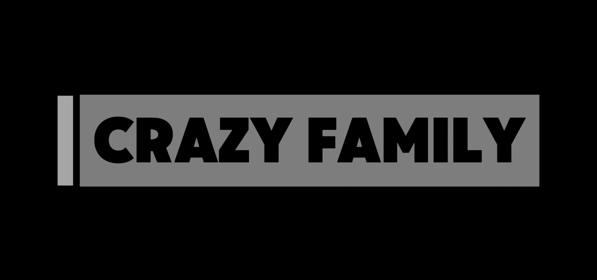

Crazy Family

This is a green screen video, I created it by removing the green screen background of certain videos(I got those online) and adding other images and videos. I used Capcut and it took me 2 hours and 30 minutes.

This is a green screen video, I created it by removing the green screen background of certain videos(I got those online) and adding other images and videos. I used Capcut and it took me 2 hours and 30 minutes.